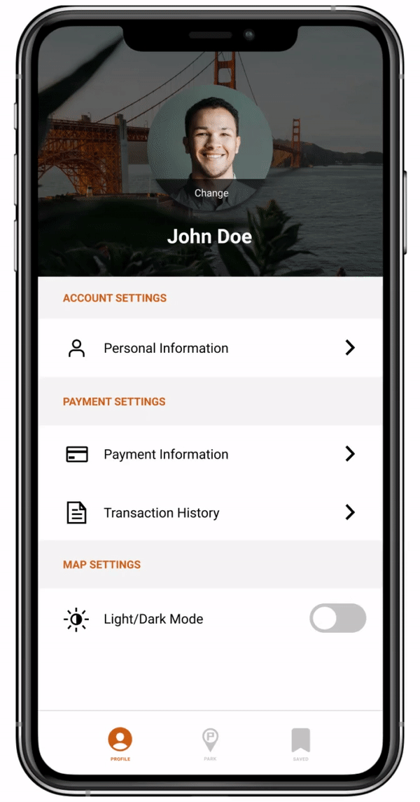
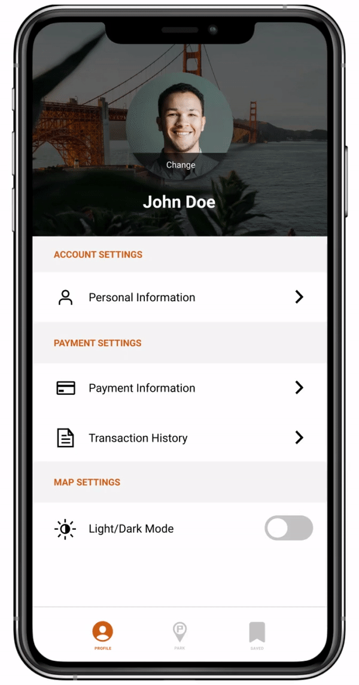

Current Experience
So how is JAPA tackling this problem?
This is what the current app experience looks like. In this quick demo, the user is looking for the Southwest Parking Lot and
checking the real-time space availability.


 
